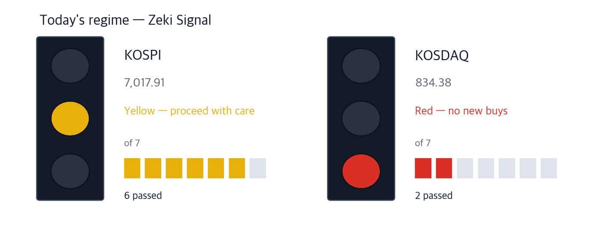

KOSPI 7,017.91 | KOSDAQ 834.38 | Nasdaq 27,244.28 | Zeki Signal Yellow |

The Zeki Signal reduces seven measures of the market's state to one light. Green means a buyable regime, yellow means proceed with care, red means no new buys. KOSPI passes six of seven and is yellow; KOSDAQ passes two and is red.
Wait — the stance the light implies.
Overnight in New York the Nasdaq composite closed up 0.45% at 27,244.28, the S&P 500 was flat at 7,764.64, and the Dow closed down 0.36% at 51,863.69.
Here is what to do now, before the open.
① A famous US hedge-fund investor began his first Korea trip at a chip-equipment maker. Stanley Druckenmiller of Duquesne Family Office visited Wonik IPS on the morning of 22 September and said he is looking for more Korean companies to own. (Korea Economic Daily 23 Sep) Wonik IPS clears three of our four tests; Jusung Engineering, which makes the same deposition equipment, clears all four.
② Two LG companies made Nvidia's data-centre supplier list. LG Electronics qualified for cooling equipment and LG Energy Solution for power storage. LG Electronics rose 5.91% on 22 September on 1.54x its 50-day average volume. LG Energy Solution has no card: its trend measure is still below zero.
③ Today is the last session before the Chuseok holiday. Seoul is shut on 24 and 25 September and reopens on the 28th. On the 24th, while it is closed, President Trump hosts President Xi at the White House. (IBD 21 Sep) On 22 September individuals sold close to 2 trillion won of KOSPI shares; corporations buying back their own stock absorbed 1.66 trillion won. (Korea Economic Daily 23 Sep)
| Date | What to watch | Effect on the market |
|---|---|---|
| Wed 23 Sep | Last session before Chuseok | Whatever happens in New York over the break lands in Seoul at once on the 28th |
| Thu 24 Sep | Trump-Xi meeting at the White House (Seoul closed) | Easing on tariffs and AI rules reaches chip-equipment names first |
| Mon 28 Sep | First session after the holiday | Whether KOSPI opens above the 22 September close of 7,017.91 |
Druckenmiller made his name betting against sterling in 1992; Treasury Secretary Scott Bessent once worked for him. His first stop on 22 September was not a conglomerate headquarters but Wonik IPS in Seongnam. He reportedly met management at Wonik IPS, Doosan Enerbility and Samsung Electronics. (Korea Economic Daily 23 Sep)
The companies share one trait: each eases a bottleneck in AI chips, where demand outruns supply. Long delivery times for chip-making equipment are cited as a bigger constraint than the chips themselves. In the second quarter he trimmed Broadcom, Intel and Micron and bought 43,600 shares of Lam Research. He moved from chipmakers to toolmakers. (Korea Economic Daily 23 Sep)
On our sector board at the 22 September close, semiconductors and chip equipment rank 2 of 38 sectors with five or more names, with a median Zeki Strength of 84 across 73 names.
| Close | Day | Week | 20 sessions | 3 months | Zeki Strength | Off high |
|---|---|---|---|---|---|---|
| 130,500 KRW | -0.31% | +18.31% | +16.21% | -20.33% | 90 | -28.81% |
| Who | Wonik IPS, a maker of deposition tools that lay thin films on wafers. |
| What | It is upgrading its atomic layer deposition (ALD) equipment. |
| When | Druckenmiller visited on the morning of 22 September. The stock closed down 0.31% at 130,500 won. |
| Where | Listed on KOSDAQ, trading about 108.7bn won a day. |
| Why | Equipment delivery times are cited as a bottleneck for AI chips. |
| How | When chipmakers add capacity, equipment orders come first — ahead of earnings. |
| Close | Day | Week | 20 sessions | 3 months | Zeki Strength | Off high |
|---|---|---|---|---|---|---|
| 203,500 KRW | -2.40% | +3.25% | +13.81% | +22.89% | 98 | -18.76% |
| Who | Jusung Engineering, which makes the same kind of deposition tools as Wonik IPS. |
| What | Sells deposition equipment to chip and display plants. |
| When | Closed 22 September down 2.40% at 203,500 won; up 13.81% over 20 sessions. |
| Where | Listed on KOSDAQ, trading about 251.0bn won a day. |
| Why | Druckenmiller is not reported to have visited it, but it sits in the same equipment bottleneck. |
| How | When deposition orders grow, suppliers of the same process step win orders together. |
Nvidia wants AI data centres built like blocks from pre-approved equipment. On 22 September LG Electronics and LG Energy Solution joined that list. (Korea Economic Daily 23 Sep)
LG Electronics qualified to supply coolant distribution units (CDU); three firms were approved and LG is the only one outside the US. LG Energy Solution was the only battery maker approved for power-storage systems. We built no card for LG Energy Solution: its trend measure is below zero and its Zeki Strength is 35, and no delivery date is set.
| Close | Day | Week | 20 sessions | 3 months | Zeki Strength | Off high |
|---|---|---|---|---|---|---|
| 215,000 KRW | +5.91% | +6.44% | +7.23% | +9.75% | 93 | -45.22% |
| Who | LG Electronics, a maker of appliances and car components. |
| What | Qualified to supply high-capacity cooling units to Nvidia data centres. |
| When | Closed 22 September up 5.91% at 215,000 won. |
| Where | Listed on the KOSPI market, trading about 150.4bn won a day. |
| Why | One AI server gives off about 100 kilowatts of heat and stops if it is not cooled. One of these units cools more than 20 servers. |
| How | Equipment built to Nvidia's standard gets chosen first, which leads to North American orders. |
| Name | ①up over 20 sessions | ②Strength 90+ | ③foreign net buy | ④institutional net buy | Met | Weight of evidence |
|---|---|---|---|---|---|---|
| Wonik IPS(240810) | O | O | X | O | 3/4 | Grounded |
| Jusung Engineering(036930) | O | O | O | O | 4/4 | Well grounded |
| LG Electronics(066570) | O | O | O | O | 4/4 | Well grounded |
| POSCO Future M(003670) | O | X | X | O | 2/4 | Needs checking |
| Sama Aluminium(006110) | X | O | X | X | 1/4 | Needs checking |
The four columns are ①up over 20 sessions ②Zeki Strength 90 or better ③foreign net buying over 20 sessions ④institutional net buying over 20 sessions. The count of O marks sets the weight of evidence.
POSCO Future M (003670) signed a 1.07 trillion won cathode supply deal with SK On for 2027-2029. Sama Aluminium (006110) supplies aluminium foil for US data-centre storage batteries to all three Korean battery makers. (Korea Economic Daily 23 Sep) Both are good news, but POSCO Future M's Zeki Strength is 60, and Sama Aluminium fell 8.01% over 20 sessions with foreigners and institutions both selling. A good article without price and flow behind it does not become a card.
The two charts below sort every name we follow by 20-session net buying from foreign investors and domestic institutions. The flow data ends 21 September, one session behind the prices.
| Stock | Net shares, 20 days | RS | 20 trading days | As of |
|---|---|---|---|---|
| 316140 | +14,333,365 | 74 | +10.0% | 09-21 |
| 003490 | +11,631,241 | 76 | +20.3% | 09-21 |
| 036540 | +7,607,003 | 95 | +83.0% | 09-21 |
| 010170 | +4,490,342 | 99 | +32.2% | 09-21 |
| 257720 | +4,412,803 | 59 | -23.0% | 09-21 |
| Stock | Net shares, 20 days | RS | 20 trading days | As of |
|---|---|---|---|---|
| 005930 | -16,916,506 | 93 | +8.0% | 09-21 |
| 251270 | -11,331,366 | 13 | -6.2% | 09-21 |
| 034220 | -10,684,429 | 10 | -10.8% | 09-21 |
| 047040 | -5,968,922 | 96 | +7.3% | 09-21 |
| 018880 | -5,853,137 | 28 | -5.4% | 09-21 |
| Stock | Net shares, 20 days | RS | 20 trading days | As of |
|---|---|---|---|---|
| 047050 | +18,737,572 | 57 | +5.9% | 09-21 |
| 005930 | +10,364,683 | 93 | +8.0% | 09-21 |
| 022100 | +9,913,233 | 19 | -3.1% | 09-21 |
| 088350 | +5,221,080 | 82 | +4.5% | 09-21 |
| 034020 | +4,579,820 | 55 | +7.3% | 09-21 |
| Stock | Net shares, 20 days | RS | 20 trading days | As of |
|---|---|---|---|---|
| 257720 | -4,820,818 | 59 | -23.0% | 09-21 |
| 009830 | -3,423,701 | 22 | -14.7% | 09-21 |
| 098460 | -3,029,352 | 68 | -1.9% | 09-21 |
| 353200 | -2,857,483 | 94 | +0.8% | 09-21 |
| 032820 | -2,546,348 | 93 | +9.2% | 09-21 |
Flow and volume, one row
Volume is the last 5 sessions against the 50-day average. F / I is net buying by foreign and institutional investors over 20 sessions, in millions of shares. |
An article and a price can agree while the money does not. The table answers one question: did 22 September volume clear the volume to beat, its 50-day average?
| Name | 22 Sep volume | Volume to beat (50-day avg) | Cleared? | 20-session flow | How to read it |
|---|---|---|---|---|---|
| Wonik IPS(240810) | 1,374,219 | 1,164,463 | 1.18x cleared | foreign selling · institutions buying (to 9/22) | Careful — foreign and institutional flows disagree |
| Jusung Engineering(036930) | 894,576 | 1,464,823 | 0.61x did not clear | foreign buying · institutions buying (to 9/21) | Hold off — flow buys but volume was thin |
| LG Electronics(066570) | 1,625,088 | 1,052,221 | 1.54x cleared | foreign buying · institutions buying (to 9/21) | Worth watching — price and volume agree |
| POSCO Future M(003670) | 365,081 | 314,813 | 1.16x cleared | foreign selling · institutions buying (to 9/21) | Careful — foreign and institutional flows disagree |
| Sama Aluminium(006110) | 116,881 | 194,521 | 0.60x did not clear | foreign selling · institutions selling (to 9/21) | Careful — both sides were net sellers |
| Weight of evidence | Names | Beat KOSPI | Winners led by | Losers trailed by | All averaged |
|---|---|---|---|---|---|
| Well grounded | 10 | 5 / 10 | +12.52%p | -4.69%p | +3.91%p |
| Grounded | 15 | 5 / 15 | +4.83%p | -5.30%p | -1.92%p |
| Needs checking | 24 | 7 / 24 | +4.73%p | -3.28%p | -0.94%p |
| Thin | 1 | 0 / 1 | — | -1.52%p | -1.52%p |
| No basis | 2 | 0 / 2 | — | -4.64%p | -4.64%p |
| Excluded | 1 | 1 / 1 | +7.33%p | — | +7.33%p |
| Well grounded 10 | +3.91%p | ||||||
| Grounded 15 | −1.92%p | ||||||
| Needs checking 24 | −0.94%p | ||||||
| Thin 1 | −1.52%p | ||||||
| No basis 2 | −4.64%p | ||||||
| Excluded 1 | +7.33%p |
The centre line is KOSPI. Right is ahead, left is behind. The grey number is how many names are in that band.
Of 10 Well grounded names, 5 beat KOSPI. Those 5 led by 12.5%p on average; the 5 that lost trailed by 4.7%p. All together: +3.9%p.
Toward the verdict. Across both markets, 24 of 60 cases have 5 trading days behind them. At 60 we run the test we fixed in advance, once, and print what it says. Until then the table above is interim.
| When | What to watch | What it means |
|---|---|---|
| First 30 minutes (09:00-09:30) | Do Wonik IPS and Jusung Engineering move together | Moving together means buyers want the equipment group, not one visit |
| 10:00 | Does KOSPI hold 7,017.91 | The 22 September close; shows how much selling comes before the holiday |
| Last 30 minutes (15:00-15:30) | Does LG Electronics volume clear its 50-day average of 1,052,221 shares | If it does, the 22 September rise was not a one-day move |
Seoul is closed on 24 and 25 September. On the 24th President Trump meets President Xi at the White House. On the 28th, watch whether chip-equipment names and LG Electronics hold their pre-holiday prices.
This report is for information only and is not individual investment advice. ZekiRex™ Apex KR runs a rules-based simulated portfolio of 1 billion won — there is no real account, no order and no fill. The performance shown excludes commissions, taxes and slippage, and the price data omits companies that were delisted, which biases the result upward (survivorship bias). Past performance does not guarantee future results, and investing carries risk of loss of capital.
Sources — Korea Economic Daily print edition of 23 September, Maeil Business markets section, IBD (21 September), Korea Exchange flow disclosures, FinanceDataReader, Naver and Yahoo Finance prices. Prices are the 22 September close; flow data runs to 21 September (Wonik IPS to 22 September). No sentences are reproduced from the paper; the facts are restated in our own words.
This is the Rex Way, ZekiRex™